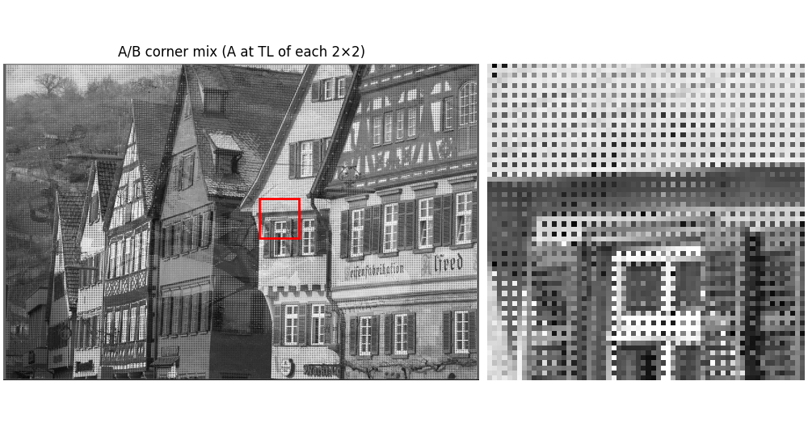
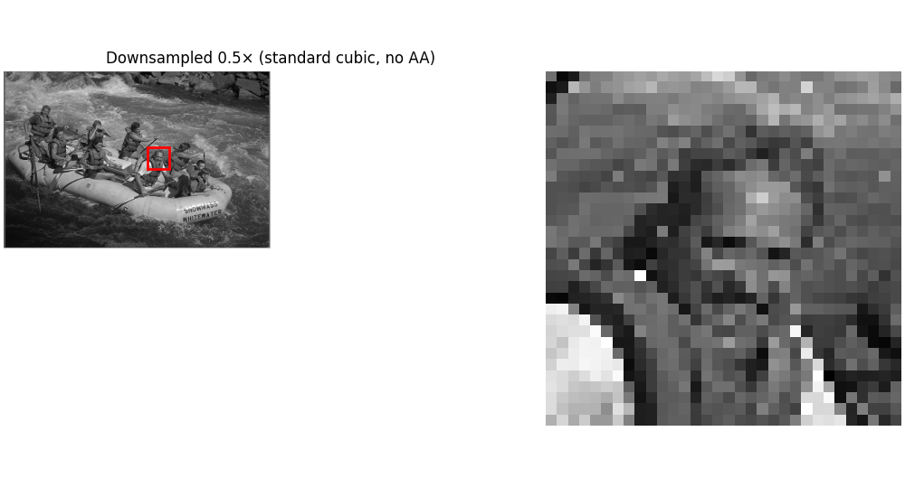
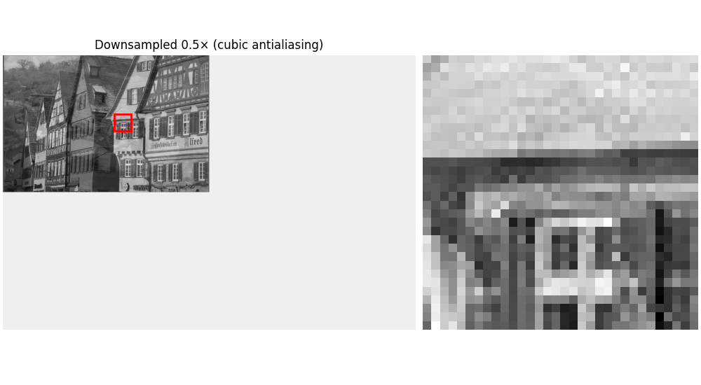
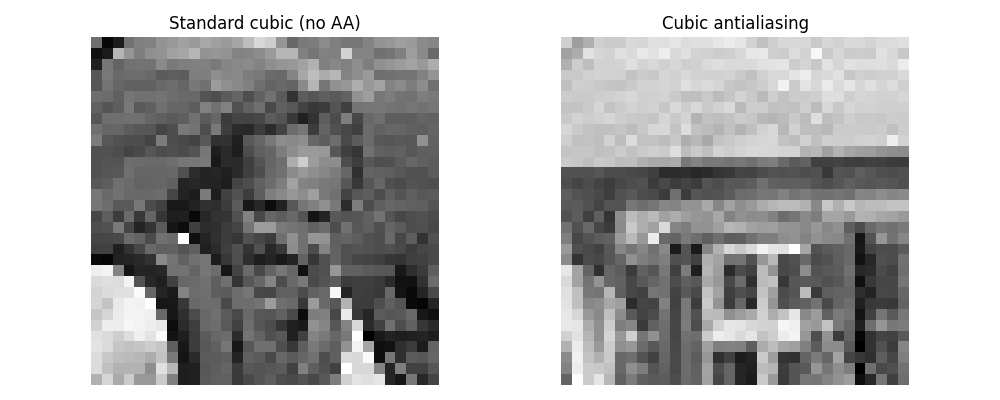
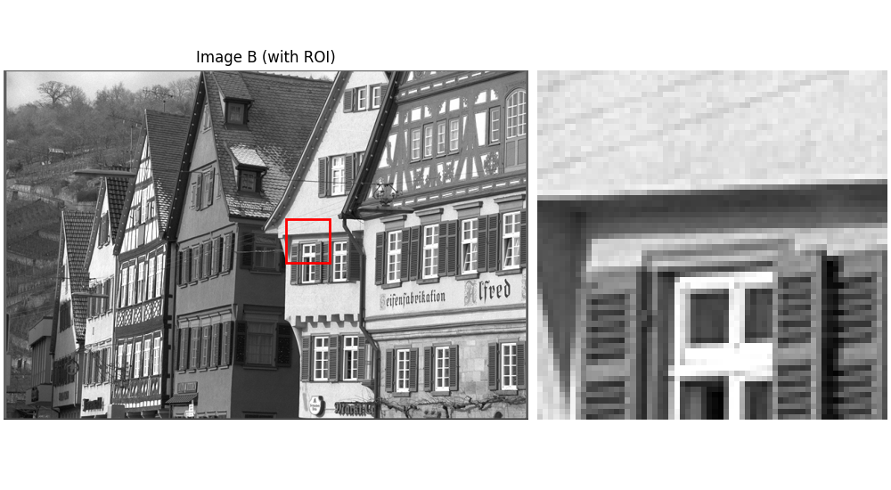

How Bad Aliasing Can Be#
We construct an A/B corner mix image where, in each 2×2 tile, the top-left pixel comes from image A and the other three come from B. We then:
Look at the A/B mix at full resolution.
Downsample by 0.5 with standard cubic interpolation (no explicit anti-aliasing) and observe a surprising result: the mix collapses to something very close to A.
Downsample by 0.5 with an antialiased cubic projection and see how proper low-pass filtering preserves the expected 25%/75% mixture in the ROI.
This illustrates why anti-aliasing is essential for faithful downsampling.
Imports#
import numpy as np
import matplotlib.pyplot as plt
from urllib.request import urlopen
from PIL import Image
from splineops.resize import resize
from splineops.utils.plotting import show_roi_zoom
# Use float32 for storage / IO (resize still computes internally in float64).
DTYPE = np.float32
Load and Prepare Base ROI#
Load A and B, convert to grayscale, and define the ROI on the originals.
URL_A = "https://r0k.us/graphics/kodak/kodak/kodim14.png"
URL_B = "https://r0k.us/graphics/kodak/kodak/kodim08.png"
ROI_SIZE_PX = 64 # original ROI side (pixels)
FACE_ROW, FACE_COL = 250, 445 # ROI center (approx) in ORIGINAL coordinates
ZOOM = (0.5, 0.5) # 0.5× downsampling demo
def to_gray01(img_rgb_uint8: np.ndarray) -> np.ndarray:
g = img_rgb_uint8.astype(np.float64) / 255.0
gray = 0.2989 * g[..., 0] + 0.5870 * g[..., 1] + 0.1140 * g[..., 2]
return gray.astype(DTYPE)
with urlopen(URL_A, timeout=10) as resp:
A = to_gray01(np.array(Image.open(resp)))
with urlopen(URL_B, timeout=10) as resp:
B = to_gray01(np.array(Image.open(resp)))
assert A.shape == B.shape, "Images A and B must have identical shape."
h_img, w_img = A.shape # ORIGINAL canvas size (e.g., 512×768)
# Original ROI (face) — top-left corner (for show_roi_zoom)
row_top = int(np.clip(FACE_ROW - ROI_SIZE_PX // 2, 0, h_img - ROI_SIZE_PX))
col_left = int(np.clip(FACE_COL - ROI_SIZE_PX // 2, 0, w_img - ROI_SIZE_PX))
# Keep the ROI center as *relative* position for later (downsampled views)
rel_center_r = FACE_ROW / h_img
rel_center_c = FACE_COL / w_img
roi_kwargs_orig = dict(
roi_height_frac=ROI_SIZE_PX / h_img, # keeps height at 64 px (square ROI)
grayscale=True,
roi_xy=(row_top, col_left), # top-left of the ROI
)
Base Image#
Construct the synthetic “corner mix” where A occupies the top-left pixel of every 2×2 block, and B fills the other three pixels.

Downsampling (No Antialiasing)#
We first apply a 0.5× downsampling using standard cubic interpolation. To make the behaviour easier to see, we crop the input so that its height and width are odd: this ensures the 0.5× sampling grid lands exactly on the top-left pixel of each 2×2 tile.
H, W = mixed.shape
if (H % 2 == 0) or (W % 2 == 0):
mixed_odd = mixed[: H - (H % 2 == 0), : W - (W % 2 == 0)]
else:
mixed_odd = mixed
h_odd, w_odd = mixed_odd.shape
assert (h_odd % 2 == 1) and (w_odd % 2 == 1), "Expect odd H×W after the crop."
res_std = resize(
mixed_odd,
zoom_factors=ZOOM,
method="cubic", # standard (no explicit anti-aliasing)
)
def show_resized_on_original_canvas_same_relpos(resized: np.ndarray, title: str):
h_res, w_res = resized.shape
# EXACT half-size ROI on the resized image
roi_h_res = ROI_SIZE_PX // 2 # 64 → 32
roi_w_res = ROI_SIZE_PX // 2
# SAME RELATIVE CENTER as in originals
center_r_res = int(round(rel_center_r * h_res))
center_c_res = int(round(rel_center_c * w_res))
# ROI top-left in RESIZED coords, clipped
row_top_res = int(np.clip(center_r_res - roi_h_res // 2, 0, h_res - roi_h_res))
col_left_res = int(np.clip(center_c_res - roi_w_res // 2, 0, w_res - roi_w_res))
# Build ORIGINAL-size white canvas and paste resized at (0,0)
canvas = np.ones((h_img, w_img), dtype=resized.dtype)
canvas[:h_res, :w_res] = resized
# Use ORIGINAL canvas height so 32 px is respected visually (no forced shrinking)
roi_kwargs_canvas = dict(
roi_height_frac=(ROI_SIZE_PX // 2) / h_img, # 32 / original height
grayscale=True,
roi_xy=(row_top_res, col_left_res), # ROI within the pasted resized patch
)
return show_roi_zoom(canvas, ax_titles=(title, None), **roi_kwargs_canvas)
_ = show_resized_on_original_canvas_same_relpos(
res_std, "Downsampled 0.5× (standard cubic, no AA)"
)

Downsampling (Antialiasing)#
Now we apply downsampling with antialiasing, which performs a projection that includes a matched low-pass filter before decimation.

ROI Comparison#
To make the difference as clear as possible, we extract the same 32×32 ROI around the same physical location from both downsampled images and display their nearest-neighbour magnifications side by side.
roi_side_res = ROI_SIZE_PX // 2 # 64 → 32 in the downsampled images
# ROI in standard cubic result
h_std, w_std = res_std.shape
center_r_std = int(round(rel_center_r * h_std))
center_c_std = int(round(rel_center_c * w_std))
row_top_std = int(np.clip(center_r_std - roi_side_res // 2, 0, h_std - roi_side_res))
col_left_std = int(np.clip(center_c_std - roi_side_res // 2, 0, w_std - roi_side_res))
roi_std = res_std[row_top_std : row_top_std + roi_side_res,
col_left_std : col_left_std + roi_side_res]
# ROI in antialiased result (same physical location)
h_aa, w_aa = res_aa.shape
center_r_aa = int(round(rel_center_r * h_aa))
center_c_aa = int(round(rel_center_c * w_aa))
row_top_aa = int(np.clip(center_r_aa - roi_side_res // 2, 0, h_aa - roi_side_res))
col_left_aa = int(np.clip(center_c_aa - roi_side_res // 2, 0, w_aa - roi_side_res))
roi_aa = res_aa[row_top_aa : row_top_aa + roi_side_res,
col_left_aa : col_left_aa + roi_side_res]
def _nearest_big(roi: np.ndarray, target_h: int = 256) -> np.ndarray:
h, w = roi.shape
mag = max(1, int(round(target_h / h)))
return np.repeat(np.repeat(roi, mag, axis=0), mag, axis=1)
roi_big_std = _nearest_big(roi_std, 256)
roi_big_aa = _nearest_big(roi_aa, 256)
fig, axes = plt.subplots(1, 2, figsize=(10, 4))
for ax, im, title in zip(
axes,
[roi_big_std, roi_big_aa],
["Standard cubic (no AA)", "Cubic antialiasing"],
):
ax.imshow(im, cmap="gray", interpolation="nearest")
ax.set_title(title)
ax.axis("off")
ax.set_aspect("equal")
fig.tight_layout()
plt.show()

Source Images and ROI#
To understand the behaviour, it is helpful to inspect the two source images separately on the original grid, using the same ROI.
Image A#
_ = show_roi_zoom(A, ax_titles=("Image A (with ROI)", None), **roi_kwargs_orig)
Image B#
_ = show_roi_zoom(B, ax_titles=("Image B (with ROI)", None), **roi_kwargs_orig)

Discussion#
In this synthetic A/B mix, each 2×2 block has A at the top-left pixel and B elsewhere (i.e., 25% A, 75% B per block). The downsampled images tell two very different stories:
Standard interpolation (cubic) does no prefiltering before decimation. With our odd-size tweak, the 0.5× sampling grid lands exactly on the 2×2 block corners (the A pixels). So it effectively picks A at every step, producing a result that looks almost like a clean version of A in the ROI. The 75% B content is largely aliased away into lower frequencies, which is why the pattern appears to “collapse” to A there.
Cubic antialiasing performs a proper low-pass (anti-aliasing) filtering matched to the downsampling, then decimates. On this pattern, that filter averages over each 2×2 neighbourhood, so the result tends toward 25% A + 75% B — visually “more B”, more like the mix. This is exactly what anti-aliasing should do: remove the high-frequency checkerboard content so it doesn’t fold (alias) into the downsample.
In short: interpolation without AA does sample-and-aliasing (here it locks onto A due to phase). Antialiased cubic implements the textbook low-pass-then-sample strategy, preserving the true average content.
Total running time of the script: (0 minutes 4.041 seconds)